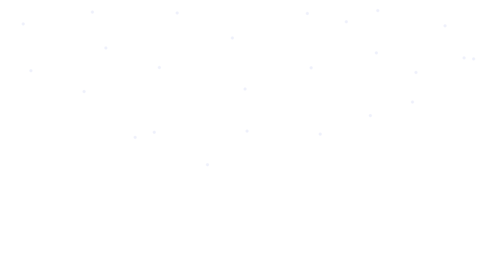
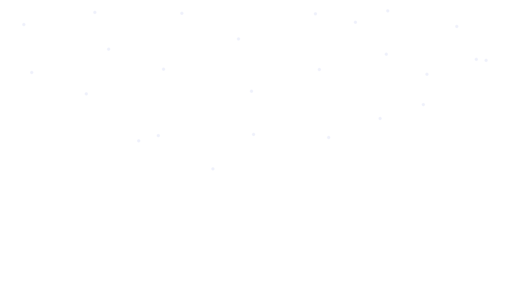


 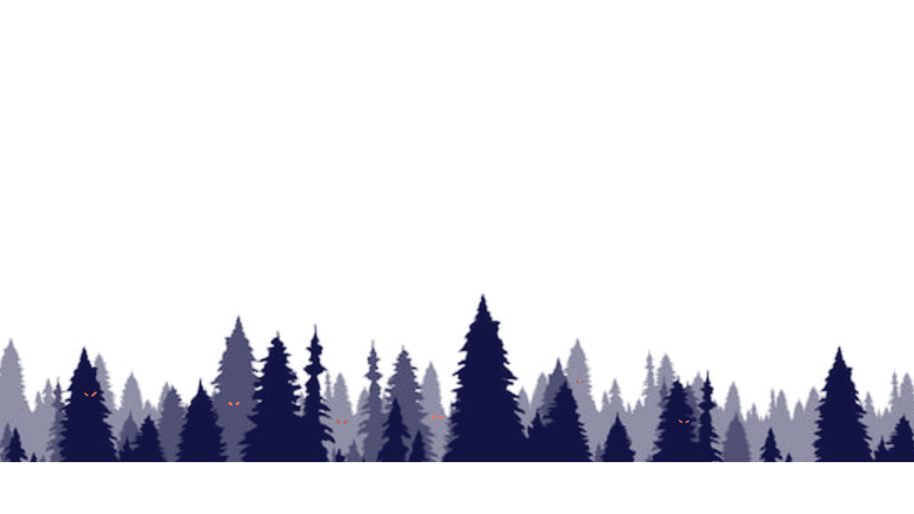
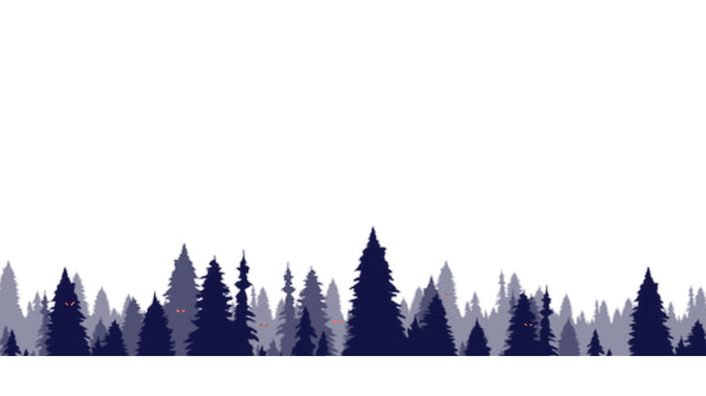
 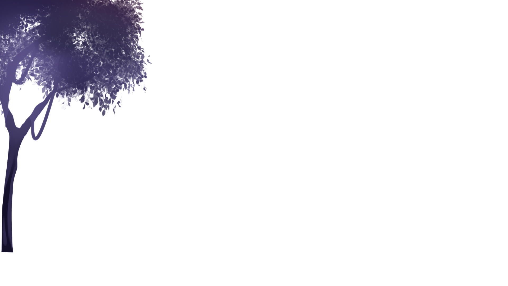
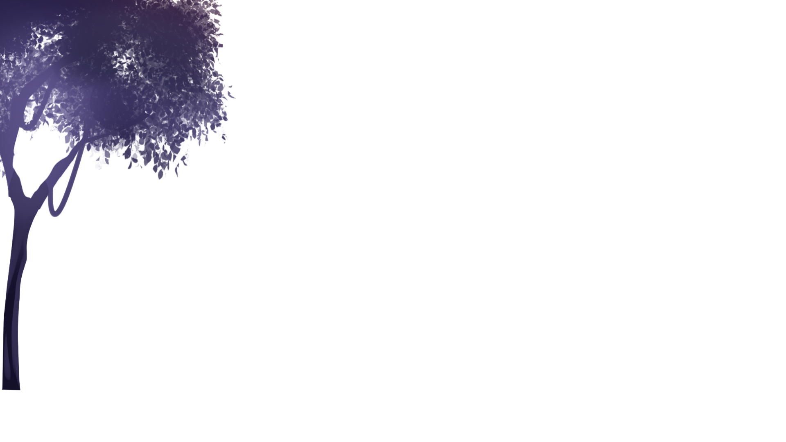


 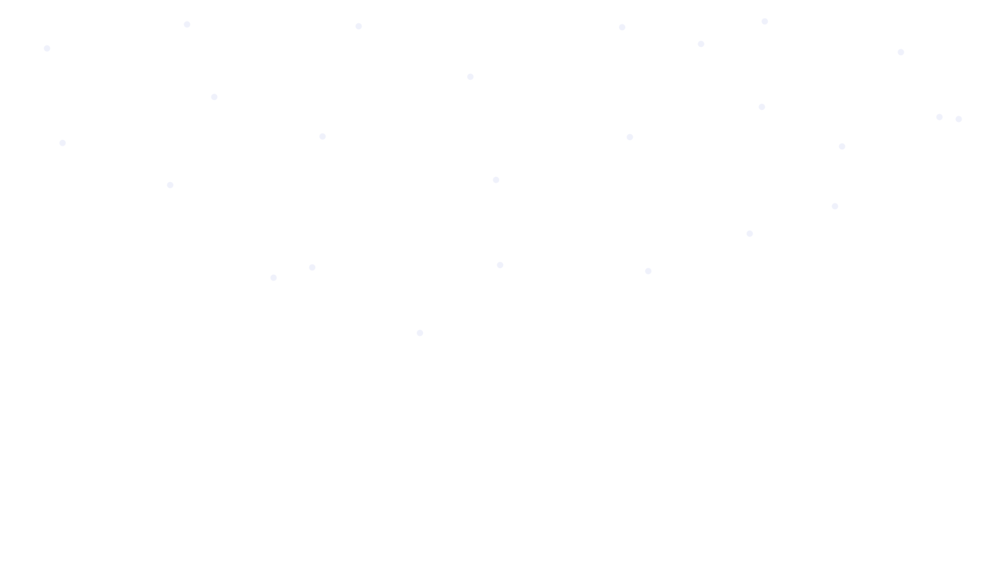
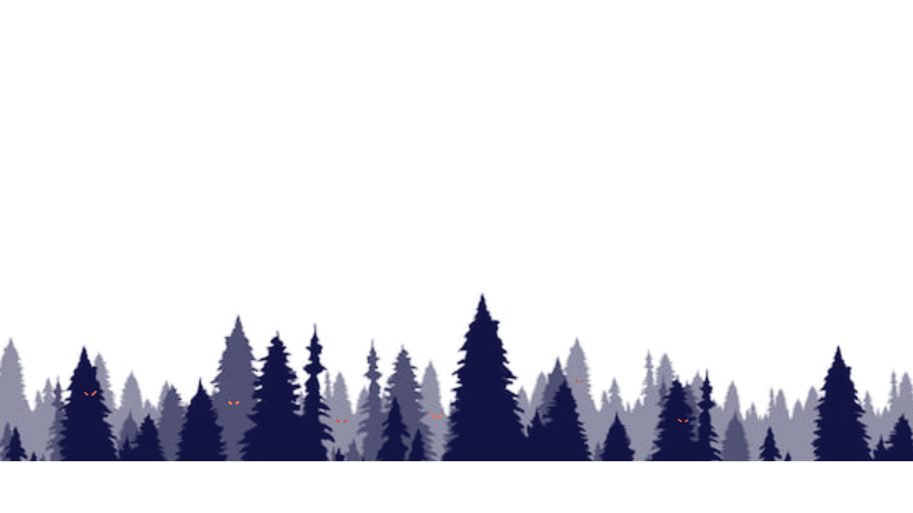
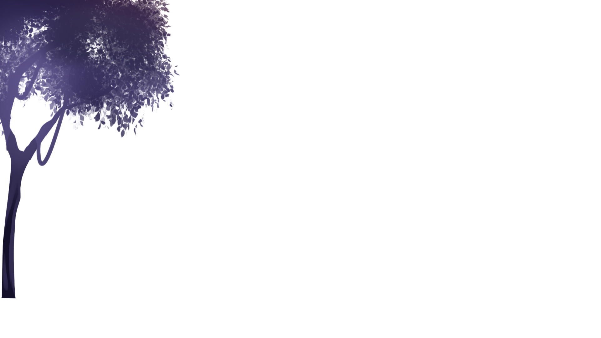
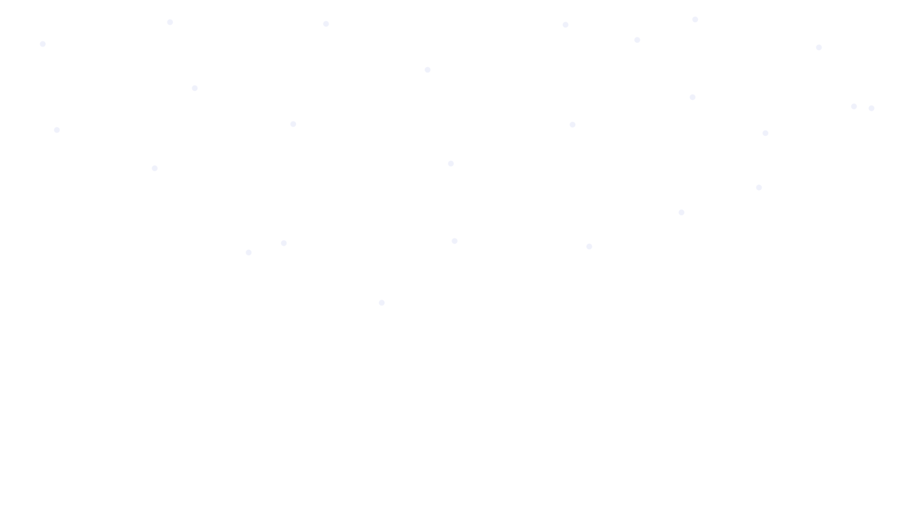
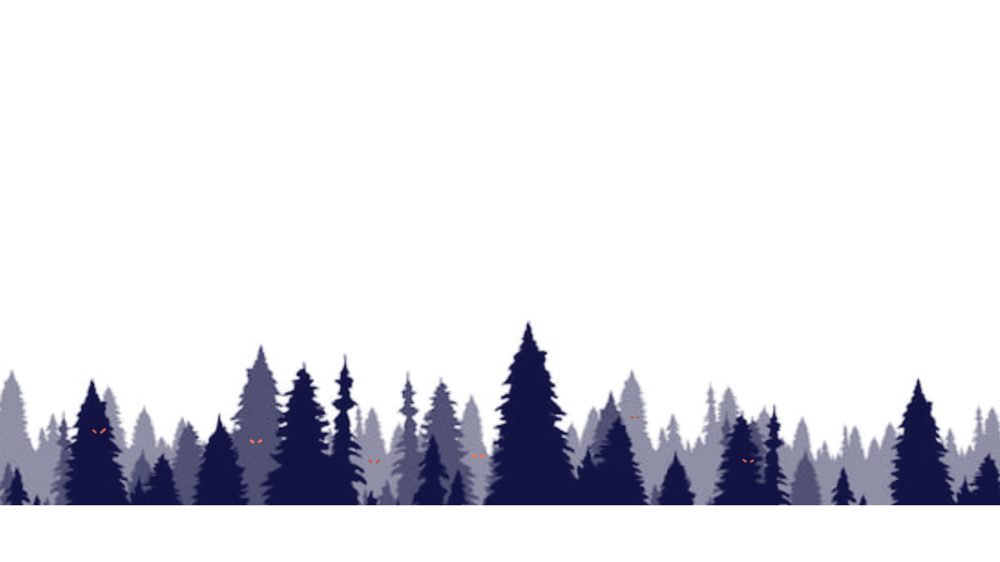
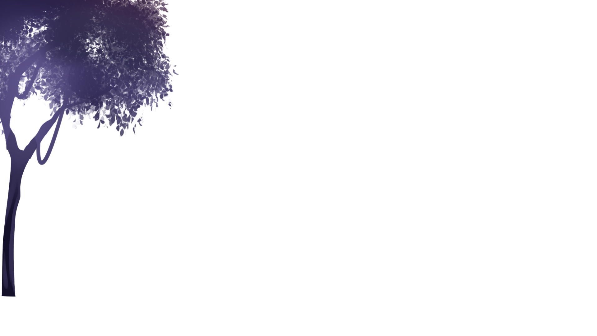
เป็นโรคติดต่อจากสัตว์สู่คน มีเชื้อก่อโรคชื่อว่า เลปโตสไปรา (Leptospira spp.) ซึ่งมีพาหะนำโรคคือ หนู สุนัข แมว วัว และค้างคาวที่มักอาศัยอยู่ในถ้ำ เป็นต้น โดยเชื้อจะออกมาพร้อมกับปัสสาวะของสัตว์และปนเปื้อนตามน้ำและดินที่เปียกชื้น หรือบริเวณที่มีน้ำท่วมขัง เช่น โคลน แอ่งน้ำ น้ำตก แม่น้ำ เป็นต้น ผู้ที่ชอบเดินป่าหรือเล่นกีฬาทางน้ำตามธรรมชาติอาจมีความเสี่ยงติดโรคนี้ได้
เกิดจากการย่ำในน้ำหรือแช่เท้าในน้ำขัง เชื้อสามารถติดต่อเข้าไปทางผิวหนังอ่อน เช่น ซอกนิ้วมือและเท้าหรือบาดแผล หรือติดต่อจากการสัมผัสสัตว์ที่เป็นพาหะโดยตรง
ผู้ป่วยบางรายอาจไม่แสดงอาการ โดยผู้ที่มีอาการจะแสดงอาการหลังจากได้รับเชื้อ 2 - 3วัน
จนถึง 2 - 3 สัปดาห์ โดยมี อาการดังนี้
ไข้สูง ปวดศีรษะ
ตาแดง เลือดออกใต้ตาขาว
ปวดเมื่อยกล้ามเนื้อรุนแรง
โดยเฉพาะที่น่อง
อาการรุนแรง มักพบได้น้อยกว่า ถ้าพบอาการเหล่านี้ต้องได้รับการรักษาอย่างทันท่วงที
ตาหลือง ตัวเหลือง
ไตวาย
ปอดอักเสบ
จุดเลือดออกตามผิว
หนังและเยื่อบุ